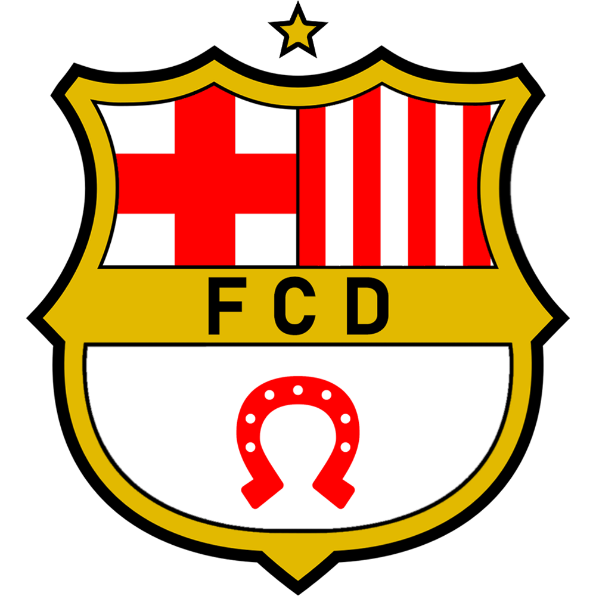
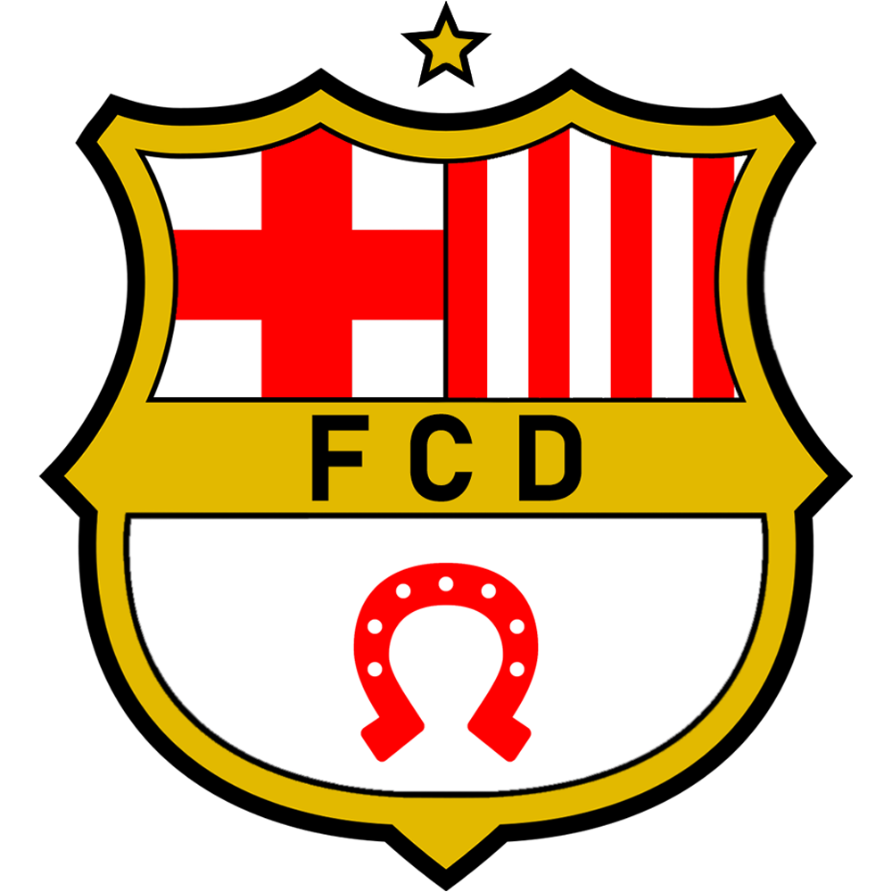
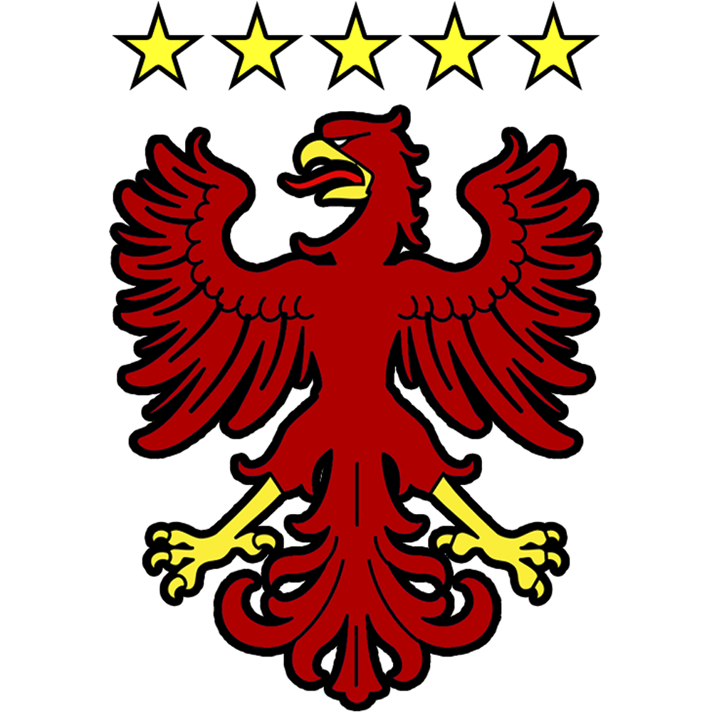
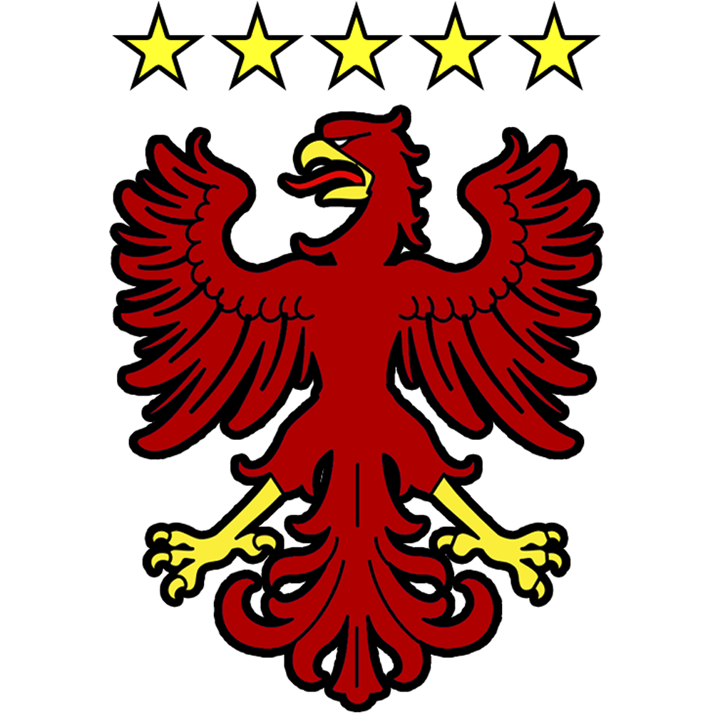

About the league
In real, the league was create in 2021 by Thomas Camuset and Jason Koenig
At the start, there was only the "Coupe d'Alsace"
And 2-3 month later, the Ligalsa was created. With all the teams
At the start, there was only the "Coupe d'Alsace"
And 2-3 month later, the Ligalsa was created. With all the teams
In 2023, the Ligalsa went from 16 to 18 teams, to have more matchs played
That's all for the Ligalsa !


 



 
